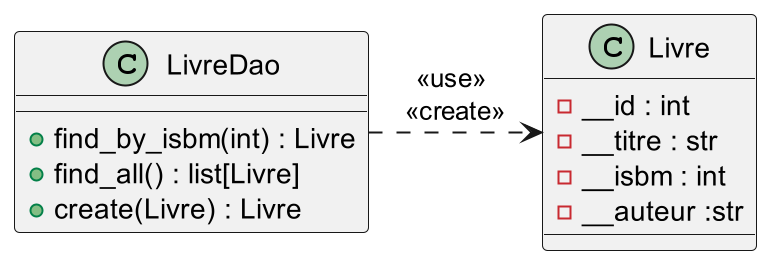

Compléments info, CM3
DAO et sécurité
DENEUVILLE Ludovic (sur la base des cours de Rémi Pépin)
ludovic.deneuville@ensai.fr
Le plan
- Data Access Object
- Pourquoi persister des données ?
- C'est quoi une DAO
- Exemple de DAO
- Sécurité Informatique
- Définition
- Failles de sécurité
- Injection SQL
-
Gestion des mots de passe
- Authentification avec cypher
- Hashage de mots de passe
- Exemple
Question ?
Data access object (DAO)
Un ordinateur (en gros)
- Un processeur (CPU) : fait UNIQUEMENT du calcul
- La mémoire RAM : mémoire volatile rapide
- Disque dur (HDD, SSD) : mémoire longue durée
- Carte graphique : unité de calcul spécialisée
Comment résoudre ce problème ?

Une question à se poser
C'est quoi une variable python ?
- Une référence (le nom de la variable)
- Un objet associé (sa valeur)
Une question qui en découle
C'est quoi un objet python ?
- Des attributs (qui peuvent être eux-mêmes des objets)
- Des méthodes
Pour résumer
On veut sauvegarder des couples clef-valeur
Avec des valeurs qui peuvent être elles-mêmes constituées de couples clef-valeur
On veut sauvegarder un arbre 🌳
Comment faire ça ?
-
Écrire nos données sur le disque dur dans un fichier
(csv, json, xml ...)

-
Utiliser une base de données (SQL tables + relations; No-SQL)

Lien persistance / application
- Python : Variables volatiles en RAM
- Système de persistance : Données stockées sur disque
- Data Access Objects (DAO) en guise de lien
C'est quoi une DAO ?
C'est quoi une DAO ?
- Classe technique

- Une classe DAO / objet métier

- Expose des méthodes pour communiquer avec la couche de persistance
Quelles méthodes exposer ?
CRUD
- Create
- Read
- Update
- Delete
L'intérêt d'une classe à part
Séparation des responsabilités
- Classe "jetable"🚮
- Modifiable sans risque 🔨
- Parallélisation du travail 🦸♀️🧙♂️👨💼👩🔬
Petit recap

Comment se connecter à une DB en python ?
Utilisation d'une bibliothèque dédiée
- PostgreSQL : psycopg2
- MySQL : mysql-connector-python
- Oracle : cx_Oracle
- MongoDB : pymongo
psycopg2
-
pip install psycopg2-binary - connection : permet d'établir la connection avec la base
Pas super intéressant à faire le code est donné - cursor : encapsule la requête
with getConnexion() as conn : with conn.cursor() as curseur : - cursor.execute() : permet de faire une requête
- cursor.fetchone()/fetchall()/fetchmany() : Récupération des résultats
Forme de base
def dao_function(arg1,arg2...):
# Récupération de la connexion à la base
with getConnexion() as conn :
# Création d'un curseur pour faire une requête
# (le curseur stocke les résultats de la requête)
with conn.cursor() as curseur :
# On envoie au serveur la requête SQL
curseur.execute(
une_requete_sql_à_trous
, remplisage_des_trous)
# On récupère l'id généré
res = curseur.fetchone() # ou /fetchall()/fetchmany()
return something
Un petit exemple : LivreDao
Un petit exemple : LivreDao
def create(self, livre) -> Livre:
"""Pour créer un livre en base"""
with DBConnection().connection as conn:
with conn.cursor() as cursor:
cursor.execute(
"INSERT INTO livre (isbm, titre, auteur)"
" VALUES (%(isbm)s, %(titre)s, %(auteur)s) RETURNING id_livre;",
{"isbm": livre.isbm, "titre": livre.titre, "auteur": livre.auteur},
)
livre.id = cursor.fetchone()["id_livre"]
return livre
Un petit exemple : LivreDao
def find_all(self) -> list[Livre]:
"""Pour récupérer tous les livres en base"""
with DBConnection().connection as conn:
with conn.cursor() as cursor:
cursor.execute(
"SELECT id_livre, "
" isbm, "
" titre, "
" auteur "
" FROM livre ; "
)
livre_bdd = cursor.fetchall()
liste_livres = []
for livre in livre_bdd:
liste_livres.append(
Livre(
id=livre["id_livre"],
isbm=livre["isbm"],
titre=livre["titre"],
auteur=livre["auteur"],
)
)
return liste_livres
Conclusion
- Python travaille en RAM (volatile)

- Obligation d'avoir un mécanisme de persistance des données
- DAO : centralise les méthodes pour lire/écrire nos données

- Le couche métier appele la DAO sans se préoccuper du système de persistance

- Permet un travail d'équipe efficace 🦸♀️🧙♂️👨💼👩🔬
Question ?
Sécurité informatique
Principes CAID
4 pilliers de la sécurité info
- Confidentialité
- Authentification
- Intégrité
- Disponibilité
Deux bonus
- Traçabilité
- Non-répudiation
Confidentialité
Seules les personnes autorisées doivent avoir accès aux informations qui leur sont destinées (notions de droits ou permissions). Tout accès indésirable doit être empêché.Mécanismes associés : gestion des droits (annuaires, rôles ...), cryptographie
Authentification
Les utilisateurs doivent prouver leur identité en répondant à un "challenge".Mécanismes associés : authentification faible (idep, mdp), forte (données biométriques, multi facteurs)
Intégrité
Les données doivent être celles que l'on attend, et ne doivent pas être altérées de façons fortuites, illicites ou malveillantes.Mécanismes associés : signature électronique, checksum
Disponibilité
L'accès aux ressources du système d'information doit être permanent et sans faille durant les plages d'utilisation prévues.Mécanismes associés : redondance des serveurs, virtualisation, conteneurisation
Traçabilité
Garantit que les accès et tentatives d'accès aux éléments considérés sont tracés et que ces traces sont conservées et exploitables.Mécanisme associé : journalisation
La non-répudiation
Aucun utilisateur ne doit pouvoir contester les opérations qu'il a réalisé dans le cadre de ses actions autorisées et aucun tiers ne doit pouvoir s'attribuer les actions d'un autre utilisateur.Mécanismes associés : traçabilité + authentification + intégrité
Les failles informatiques
Trop de failles !!!
- Failles physiques "bas niveau"
- Failles physiques "haut niveau"
- Injection SQL
- Injection de données
- Faille XSS
- Exécution de code
- ...
De quoi faut-il se méfier ?

De vos utilisateurs
Exemple de failles, les injections SQL

Exemple
Application de micro bloggingInjection SQL
Consiste à saisir du SQL pour exécuter une autre requête que celle prévue.Problèmes
- Confidentialité
- Authentification
- Intégrité
- Disponibilité
Exemple : s'authentifier sans mot de passe
Requete d'authentification
SELECT * FROM user
WHERE name='input_name'
AND mdp='input_mdp';
Exemple : s'authentifier sans mot de passe
Saisie
- Rémi
- mon_super_password
SELECT * FROM user
WHERE name='Rémi'
AND mdp='mon_super_password';
Cas classique
Exemple : s'authentifier sans mot de passe
Saisie
- Rémi
- ' OR 1=1; --
SELECT * FROM user
WHERE name='Rémi'
AND mdp='' OR 1=1; --';
Connection sans mdp
Exemple : supprimer une table
Saisie
- Rémi
- '; DROP TABLE user CASCADE; --
SELECT * FROM user
WHERE name='Rémi'
AND mdp=''; DROP TABLE user CASCADE; --;
Bye bye la table user
Comment se protéger ?
- Échapper les caractères spéciaux
- Utiliser une requête préparée
La bibliothèque que vous utiliserez ne fait que de l'échappement de caractères spéciaux 😨
Cross Site Scripting
Consiste à injecter du code provoquant des actions sur le navigateur. Cela peut permettre :- Des redirections de page (phishing)
- Du vol d'information
- Des actions sur le site
- Rendre le site difficile à utiliser
Exemple d'injection d'un script JS
- Site de micro blogging
- Les utilisateurs peuvent rentrer du texte qui sera ensuite mis dynamiquement dan la page web
<script> while(1==1){alert('bonjour')}</script>
Comment se protéger ?
- Ne jamais insérer des données brutes
- Échapper les caractères spéciaux
- Vérifier vos données
Les bibliothèques web le font souvent pour vous !😁
To sum up : injection
- Ne jamais faire confiance aux utilisateurs, vérifier / nettoyer leurs inputs
- Ne jamais faire confiance aux utilisateurs, vérifier / nettoyer leurs inputs
- Ne jamais faire confiance aux utilisateurs, vérifier / nettoyer leurs inputs
- Ne jamais faire confiance aux utilisateurs, vérifier / nettoyer leurs inputs
- Ne jamais faire confiance aux utilisateurs, vérifier / nettoyer leurs inputs
Gestion des mots de passe
Votre application doit-elle stocker des mots de passe en clair?

Votre application doit-elle connaître le mot de passe d'un utilisateur pour l'authentifier ?

????

Hasher le mot de passe
- Hashage du mot de passe => cypher
- Stockage du cypher en base
- Quand besoin de comparer on hashe le mdp saisi
- Et on compare les cyphers

Ajouter du sel pour plus de sécurité

Une base sans sel ajouté
- Votre base mail/mdp fuite mais les mdp sont hachés
- Les attaquants doivent bruteforce les mdp
- Ils commencent par les mdp les plus courants, et les hachent avec les algo de hash courants
- Puis ils comparent avec la base. Forte chance d'avoir plusieurs match
Le sel c'est bon pour la sécurité
Au lieu de hacher et stocker le mdp vous stockez et hachez le mdp ET un élément lié à l'utilisateur de manière déterministe (le sel).
Maintenant même si 2 personnes ont le même mdp, elles auront des hash différents.
Le sel c'est bon pour la sécurité
- Votre base mail/mdp fuite mais les mdp sont hachés et salés
- Les attaquants doivent bruteforce les mdp
- Ils commencent par les mdp les plus courants, et les hachent avec les algo de hash courants
- Puis ils comparent avec la base.
- Il y a pas de match car vos mdp sont salés
- Et trouver un mdp ne permet de trouver les autres

Exemple de hashage de mdp
import hashlib
def hash_password(password, idep):
salt = idep
return hashlib.sha256(salt.encode() + password.encode()).hexdigest()
print(hash_password("mon_super_password", "remi"))
To sum up the security part
- Toujours vérifier les inputs
- Ne jamais faire confiance aux utilisateurs
- Plusieurs niveaux de sécurité
- Pas besoin de stocker les mots de passe en clair